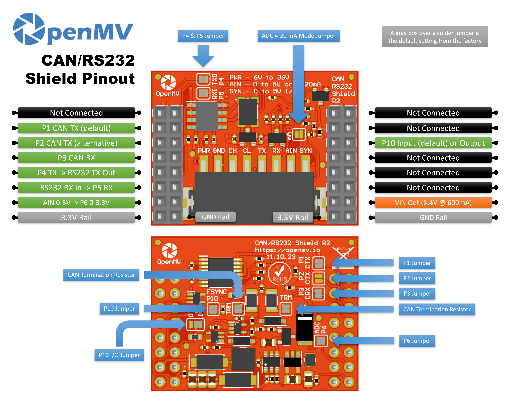

CAN/RS232 Shield¶
CAN/RS232 Shield поєднує трансивер CAN-FD з трансивером RS-232, дозволяючи OpenMV Cam спілкуватися з транспортними засобами, контролерами та застарілим послідовним обладнанням через один щит із широким вхідним діапазоном живлення та захистом від зворотної полярності.

Повний даташит, фотографії та інформацію про замовлення дивіться на сторінці продукту CAN/RS232 Shield.
Основні характеристики¶
CAN-FD зі швидкістю 8 Мб/с з вбудованою термінацією та фільтрацією
RS-232 зі швидкістю 1 Мб/с з інтегрованою фільтрацією
Вхід 6–36 В, стійкий до зворотної полярності
Вхід ADC 0–5 В із захистом від перенапруги ±36 В
Цифровий вхід/вихід 0–5 В для тригерів синхронізації камери, захищений від короткого замикання
Розпіновка¶
{kind=link}

Довідник виводів¶
Вивід |
Функція |
|---|---|
P1 |
CAN TX → вхід трансивера (за замовчуванням) |
P2 |
CAN TX → вхід трансивера (альтернативний) |
P3 |
CAN RX ← вихід трансивера |
P4 |
RS-232 TX → керує вихідною лінією |
P5 |
RS-232 RX ← приймає вхідну лінію |
P6 |
Зчитування AIN зі зсувом рівня (0–3,3 В на P6) |
P10 |
SYN — цифровий вхід/вихід із відкритим стоком на клемній колодці |
PWR вхід |
Широкий вхід 6–36 В на клемній колодці (стійкий до зворотної полярності) |
AIN вхід |
Аналоговий вхід на клемній колодці |
VIN вихід |
5,4 В до 600 мА від вбудованого регулятора |
Шина 3.3V |
Живить вбудовану електроніку щита |
Шина GND |
Загальний провід |
Примітка
AIN захищений від перенапруги до ±36 В і за замовчуванням налаштований на вхід напруги 0–5 В, масштабований до 0–3,3 В на P6. Замкніть перемичку режиму 4–20 мА на передній панелі щита, щоб перемкнути AIN на вхід струмової петлі 4–20 мА.
Примітка
SYN — цифрова лінія з відкритим стоком, підтягнута до 3,3 В з боку камери та до 5 В з боку клеми SYN. За замовчуванням це вхід — щит зсуває рівень з 0–5 В на SYN до 0–3,3 В на P10. Змініть паяну перемичку на платі, щоб перевести P10 у вихідний режим, зсуваючи рівень з 0–3,3 В на P10 до 0–5 В на SYN.
Примітка
Кожен з виводів P1, P2, P3, P4, P5, P6 та P10 може бути повернений для інших цілей. P1, P3, P4, P5, P6 та P10 підключені за замовчуванням — P1, P3, P6 та P10 через паяні перемички на зворотній стороні, P4 та P5 через паяні перемички на передній стороні. Розімкніть перемичку будь-якого виводу, який хочете звільнити. P2 за замовчуванням відключений: замкніть його паяну перемичку на зворотній стороні, щоб маршрутизувати CAN TX на P2 (і розімкніть перемичку P1 на зворотній стороні для звільнення P1).
Примітка
Розділення P1/P2 зроблено для забезпечення роботи щита на різних сімействах процесорів. Плати OpenMV Cam IMXRT (RT1062) можуть маршрутизувати CAN на P1, тому використовується стандартне підключення. Плати STM32 не можуть підключити свій периферійний пристрій CAN до P1, тому замкніть паяну перемичку P2 на зворотній стороні (і розімкніть P1) для використання альтернативи.
Примітка
Термінація шини CAN підключена за замовчуванням — розділена на два послідовних резистори по 60 Ом між CANH та CANL з конденсатором до землі в середній точці (120 Ом розділена термінація з AC-зв’язком). Розімкніть два паяних майданчики, щоб незалежно відключити кожну половину.
Використання¶
Примітка
Наведені нижче номери периферійних пристроїв CAN(0) та UART(1) відповідають відображенню IMXRT (стандартне підключення P1). На іншому процесорі шина, підключена до цих виводів, може відрізнятися — перевірте документацію вашої плати.
Надсилання та отримання кадрів CAN-FD — TX на P1 (за замовчуванням) або P2 (альтернативний), RX на P3:
from machine import CAN
can = CAN(2, 1_000_000)
can.set_filters(None)
can.send(0x123, b"\xDE\xAD\xBE\xEF")
print(can.recv())
Відлуння байтів через RS-232 на P4 (TX) / P5 (RX):
from machine import UART
uart = UART(1, baudrate=115200)
uart.write("hello\n")
print(uart.read())
Зчитування вхідного сигналу з клемної колодки AIN через вивід P6 зі зсувом рівня:
from machine import ADC
import time
ain = ADC("P6")
while True:
v = ain.read_u16() * 3.3 / 65535
print("AIN:", v * (5.0 / 3.3), "V")
time.sleep_ms(100)
Реакція на спадний фронт на лінії SYN — наприклад, для синхронізації камери з іншим пристроєм, що переводить SYN у низький рівень:
from machine import Pin
def on_sync(pin):
print("SYN falling edge")
syn = Pin("P10", Pin.IN)
syn.irq(on_sync, Pin.IRQ_FALLING)